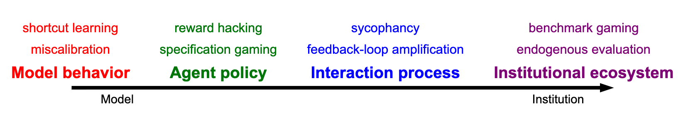

How do we know if an AI system is actually safe: not just on a benchmark, but under deployment and optimization pressure? CS120 explores this question, focusing on both measurement theoretic and institutional challenges of understanding, interpreting, and governing AI capabilities. We distinguish between AI-specific and systemic safety issues, from examining sycophancy and security implications to the challenge of measuring capabilities and risk.
This class will look at current solutions and their limitations through CS publications, and will connect the institutions behind AI, how evaluation is defined and audited, and how those factors shape the future risks we might face. Topics will span data work, foundation models, and governance, focusing on threat-models, evaluation, and auditability.
This course aims to prepare you to critically assess and contribute to safe AI development, equipping you with knowledge of cutting-edge research and ongoing debates in the field. This course has no official requirements, although we recommend some knowledge about machine learning and statistics, and will include readings, short written responses, and a final project.
Machine learning focuses on using large amounts of data to train a model. If done properly, the resulting model will be able to make usable inferences beyond the training examples, i.e., generalization. The basic shift in the study of AI safety is that successful generalization is not taken as the end of the story. Instead, the focus is on what types of assurance are required as optimization pressure in increasingly capable systems exploits misspecification, incomplete evaluation, feedback processes, and institutional structure.
This schedule is a working course map. Each meeting will pair a technical lecture with a seminar-style discussion or group exercise, which may include a guest contribution. Any guest lectures will be added as they are confirmed. Readings can be subject to change throughout the course, but will not change less than 14 days in advance. Please check the schedule here rather than a printed or duplicated copy.
| Week | Date | Lecturer | Topic |
|---|---|---|---|
| Module 1 — Framing safety and assurance | |||
| Week 1 | 09/22/26 | Robertson | What does safe AI mean? Hazards, harms, risks, reliability, alignment, and governance |
| 09/24/26 | Robertson | What is the object of assurance? Models, development pipelines, deployed systems, and institutions Readings: Amodei et al., Concrete Problems in AI Safety (2016); Selbst et al., Fairness and Abstraction in Sociotechnical Systems (FAT* 2019) |
|
| Week 2 | 09/29/26 | Robertson | What counts as an assurance claim? System boundaries, evidence, and hazard-analysis methods Readings: Rismani, Dobbe & Moon, From Silos to Systems: Process-Oriented Hazard Analysis for AI Systems (2024); Leveson & Thomas, STPA Handbook, Ch. 2 (2018). Optional: Leveson, Engineering a Safer World, Ch. 8 (2012) |
| Module 2 — Reactive model behavior and development-time optimization | |||
| 10/01/26 | Robertson | From data and objectives to model behavior: optimization, learning, generalization, and underspecification Readings: D'Amour et al., Underspecification Presents Challenges for Credibility in Modern Machine Learning (2020; anchor reading, case studies optional); Supervised learning I (CS 221 module) |
|
| Week 3 | 10/06/26 | Robertson | Proxies and model-selection pressure: Goodhart effects, shortcut behavior, and specification failures Readings: Geirhos et al., Shortcut Learning in Deep Neural Networks (2020); Manheim & Garrabrant, Categorizing Variants of Goodhart's Law (2018); Blum & Hardt, The Ladder: A Reliable Leaderboard for Machine Learning Competitions (2015, skim); Singhal et al., A Long Way to Go: Investigating Length Correlations in RLHF (COLM 2024) |
| 10/08/26 | Robertson | Robustness beyond the development distribution: distribution shift, adversarial inputs, and calibration Readings: Supervised learning II (CS 221 module; distributionally robust optimization section); Ovadia et al., Can You Trust Your Model's Uncertainty? (NeurIPS 2019); Goodfellow et al., Explaining and Harnessing Adversarial Examples (ICLR 2015) |
|
| Week 4 | 10/13/26 | Robertson | Data as specification: curation, labeling, documentation, provenance, and normative choices Readings: Sap et al., Annotators with Attitudes (NAACL 2022); Gebru et al., Datasheets for Datasets (2018); OpenAI, DALL-E 2 Pre-Training Mitigations (2022) |
| Module 3 — Sequential decision-making and agency | |||
| 10/15/26 | Robertson | From prediction to action: states, actions, policies, planning, and reinforcement learning Readings: Markov Decision Processes I (CS 221 module); Ouyang et al., Training language models to follow instructions with human feedback (2022) |
|
| Week 5 | 10/20/26 | Robertson | Reward hacking and control-loop failures: proxy rewards, side effects, and unsafe exploration Readings: Krakovna et al., Specification gaming: the flip side of AI ingenuity (DeepMind blog); Shah et al., Goal Misgeneralization (2022) |
| 10/22/26 | Robertson | Goal-directedness and long horizons: the orthogonality thesis, instrumental convergence, and goal misgeneralization Readings: Bostrom, The Superintelligent Will (2012); Black Hat 2026: The OpenAI Hacking Incident (video, 40 min) |
|
| Module 4 — Adaptive interaction and sociotechnical dynamics | |||
| Week 6 | 10/27/26 | Robertson | Human feedback, preferences, and reward models Readings: Lambert, Reinforcement Learning from Human Feedback (RLHF Book), Ch. 5 (Reward Modeling) and Ch. 11 (Preference Data) |
| 10/29/26 | Robertson | Pluralism, disagreement, and preference aggregation Readings: Lambert, RLHF Book, Ch. 10 (The Nature of Preferences) |
|
| Week 7 | 11/03/26 | No class | Democracy Day |
| 11/05/26 | Robertson | Adaptive interaction-time hazards: sycophancy, manipulation, and preference shaping Readings: Cheng, Lee, Khadpe, Yu, Han & Jurafsky, Sycophantic AI decreases prosocial intentions and promotes dependence (Science, 2026); What counts as Sycophancy? (2026); Kaffee, Pistilli & Jernite, INTIMA (ICLR 2026), selected sections. Optional: Hong et al., Measuring Sycophancy of Language Models in Multi-turn Dialogues (Findings of EMNLP 2025) |
|
| Week 8 | 11/10/26 | Robertson | Sociotechnical production and deployment: labor, organizational incentives, data endogeneity, and externalities Readings: Veselovsky et al., Artificial Artificial Artificial Intelligence: Crowd Workers Widely Use Large Language Models for Text Production Tasks (2023); Perrigo, OpenAI Used Kenyan Workers on Less Than $2 Per Hour to Make ChatGPT Less Toxic (TIME, 2023); Do you agree with Gergely that Stack Overflow is almost dead? (Meta Stack Overflow) |
| Module 5 — Evaluation, governance, and institutional assurance | |||
| 11/12/26 | Robertson | What makes an evaluation valid? Construct validity, behavioral evaluation, and interpretability-based evidence | |
| Week 9 | 11/17/26 | Robertson | Benchmarks under optimization pressure: contamination, gaming, and endogenous evaluation |
| 11/19/26 | Robertson | Adversarial and complementary forms of evidence: red teaming, interpretability, and evidence triangulation | |
| Week 10 | 11/24/26 | No class | Thanksgiving Recess |
| 11/26/26 | No class | Thanksgiving Recess | |
| Week 11 | 12/01/26 | Robertson | Oversight and assurance institutions: audits, access, certification, and governance |
| 12/03/26 | Robertson | Synthesis and project workshop: building an auditable and governable assurance case | |
Each week, students are expected to do the required readings and submit short written responses. Towards the end of the quarter, students will need to submit a final project and two peer reviews. Final projects can range from running experiments to writing literature reviews and policy recommendations to accommodate for different backgrounds.
The checks consist of reading posts due before class, a post-class debrief on who and what you engaged with during the discussion period, and some homework. The homework will quiz basic definitions; we reserve the right to do this because terminology is unusually important in this course. There will be roughly 30 of these due over the quarter, and the lowest five are dropped. No late days apply to checks. Submissions are on Gradescope.
Each meeting will be split into a lecture and a discussion or group activity half. We grade participation in the discussion portion. The discussion portion will focus on readings assigned to the meeting topic. The general flow will consist of prompts, small group nearest-neighbor discussion, large group synthesis, and repeat. Attendance will be taken at the start and end of class. However, generally, participation will be based on second half participation. Posted slides and lecture notes / recordings will be made available. How participation is recorded will be posted before the first week of class.
The percentages below are the grading breakdown for the course. They will be published as a single coherent package with the late policy for project milestones and the assignment calendar before the end of Week 2.
All times are Pacific. Dates marked TBA will be fixed and announced on Ed and here before the end of Week 2.
| Week | Deliverable | Date |
|---|---|---|
| 1–11 | Reading response (before class) and discussion debrief (after class) | Each class meeting |
| 5–7 | Mid-quarter evaluation/audit plan (project proposal) | TBA |
| 11 | Project workshop and structured peer feedback (in class) | Tue Dec 1 |
| Finals | Final project due | Dec 7–11 (exact date TBA) |
| Finals | Peer reviews due | TBA (after the project deadline, before university grade submission) |
The final project probes a concrete AI-safety problem by constructing and evaluating an assurance claim. To accommodate different backgrounds, several forms are allowed, but one common rubric applies:
Regardless of your project's focus, it must follow the structure of a scientific paper, and every project should state the safety claim, human inputs, deployment context, evaluation validity, access limits, unintended effects, and limitations.
We will use Ed for all communications. Make a public Ed post whenever possible. For extra sensitive matters, you can email the instructor; a course staff email will be posted once course assistants are confirmed.
Students who may need an academic accommodation based on the impact of a disability must initiate the request with the Office of Accessible Education (OAE). Professional staff will evaluate the request with required documentation, recommend reasonable accommodations, and prepare an Accommodation Letter for faculty dated in the current quarter in which the request is being made. Students should contact the OAE as soon as possible since timely notice is needed to coordinate accommodations. The OAE is located at 563 Salvatierra Walk (phone: 723-1066). Send your OAE letter to the teaching team by the end of Week 3. Only accommodations explicitly stated in your current OAE letter will be accommodated; the teaching team will not be able to approve any retroactive accommodation requests. If you need course materials in an alternate format, please contact the instructor early so we can coordinate with the OAE.
Please read Stanford's honor code policy. In the context of CS120, you are free to form study groups and discuss readings and projects. However, you must write up responses and projects from scratch independently, and you must acknowledge in your submission all the students you discussed with. Looking at or showing another student's writeup, discussing a response in such detail that your writeup is almost identical to another student's, and looking at solutions from previous years are considered honor code violations. Anyone violating the honor code policy will be referred to the Office of Community Standards. If you think you violated the policy (it can happen, especially under time pressure!), please reach out to us; the consequences will be much less severe than if we approach you.
You cannot use AI to write your responses. This is the same as the requirement that students must complete their own write-ups: each student is expected to submit their own solutions to every CS120 check, project, and peer review.
You may use generative AI tools such as Co-Pilot and ChatGPT as you would use a human collaborator. This means that you may not directly ask generative AI tools for answers or copy solutions, and you must acknowledge generative AI tools as collaborators. Additionally, you may not use generative AI tools to "check" your work, even if you wrote it yourself, as this is equivalent to having another student look at your answers. The use of generative AI tools to substantially complete an assignment (e.g. by directly copying) is prohibited and will result in honor code violations. We will be checking students' submissions to enforce this policy.
If you use generative AI tools, you must provide a transcript of the interaction (for example, a shared conversation link or screenshots) with that submission. This applies to every submission: if you use an AI tool for all thirty responses, we expect thirty links. You may not use generative AI tools that do not support attribution or transcript sharing. For example, using an agentic coding tool such as Codex or Claude Code to build a repository from a project proposal is not allowed. For the final project, we may also review commit history for evidence of overreliance on AI tools. See Stanford's Generative AI Policy Guidance for the university-wide baseline.
You are welcome to audit the class! Please reach out to the instructor if you want to audit the class to ensure we do not reach the capacity of the classroom. Please note that auditing is only allowed for matriculated undergraduates, matriculated graduate/professional students, postdoctoral scholars, visiting scholars, Stanford faculty, and Stanford staff. Non-Stanford students cannot audit the course. Audited courses are not recorded on an academic transcript and no official records are maintained for auditors.
The CS120 teaching staff is committed to creating an inclusive and supportive learning environment for all students. Please be respectful to your fellow students, course CAs, and instructors. If you see any problems, please reach out to us early.
If you are experiencing personal, academic, or relationship problems and would like someone to talk to, reach out to Counseling and Psychological Services (CAPS) by calling 650-723-3785 or through the Vaden patient portal. For more information, visit vaden.stanford.edu/caps-and-wellness.
Stanford as an institution is committed to the highest quality education, and as your teaching team, our first priority is to uphold your educational experience. To that end we are committed to following the syllabus as written here, including through short- or long-term disruptions, such as public health emergencies, natural disasters, or protests and demonstrations. However, there may be extenuating circumstances that necessitate some changes. Should adjustments be necessary, we will communicate clearly and promptly to ensure you understand the expectations and are positioned for successful learning.